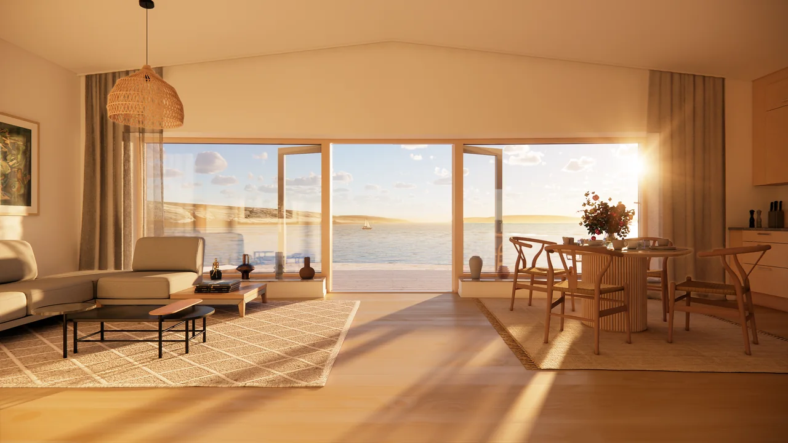

Från vad du vill.
Till hur det kan bli.
Ett par timmars rådgivning eller ett större arkitektuppdrag. Vi anpassar samarbetet till projektet, ditt läge och nästa beslut.

Interiörvisualisering · Villa Rhombus
Börja med förutsättningarna.
En tidig dialog kan hjälpa dig att se vad som är möjligt innan du bestämmer dig. Vi går igenom dina behov och undersöker vad platsen och den befintliga byggnaden ger utrymme för.
- Rådgivning och förstudie
- Analys av plats, befintliga handlingar och planförutsättningar
- Uppmätning och digital dokumentation
Se möjligheterna ta form.
Genom skisser prövar vi sambanden mellan rummen, dagsljuset och mötet mellan ute och inne. Visualiseringar gör det lättare att diskutera proportioner och material.
- Planlösningar och volymstudier
- Fasad- och materialstudier
- 3D-modeller, visualiseringar och kollage
- Arkitektur och trädgårdsdesign, i samarbete med Hilda Wiggins på Studio Wiggins AB
Ett underlag att arbeta vidare med.
När riktningen är vald utvecklas ritningarna efter uppdragets behov. Jag kan hjälpa till genom bygglovsprocessen och samordna arkitekturfrågorna med övriga konsulter.
- Situationsplan, planer, fasader och sektioner
- Bygglovshandlingar och kontakt med kommunen
- Projektering och detaljerade bygghandlingar
- Förfrågningsunderlag och stöd under byggskedet
Du ska förstå vad vi gör.
Och varför.
Vi kommer överens om omfattning, leveranser och ersättning innan arbetet startar. Beroende på uppdraget kan det vara ett fast pris eller löpande tid.
Vad vill du ge plats åt?
Ett hus att landa i. Ett extra rum. En idé som behöver en första skiss. Berätta vad du tänker, så börjar vi där.